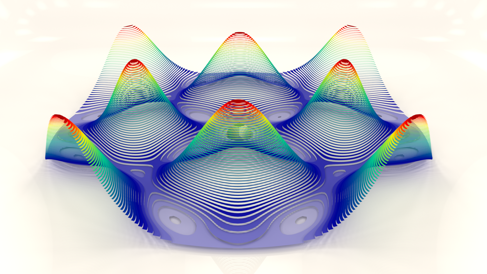
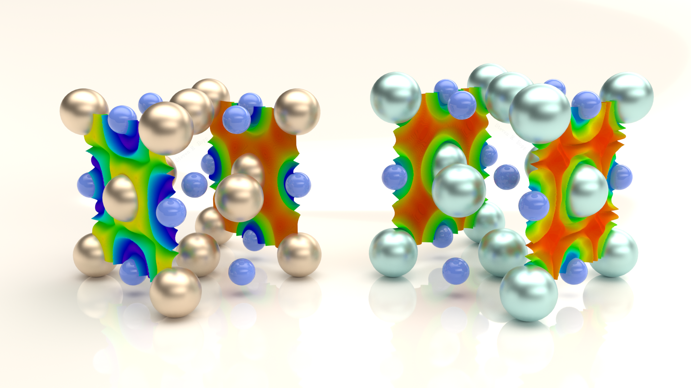
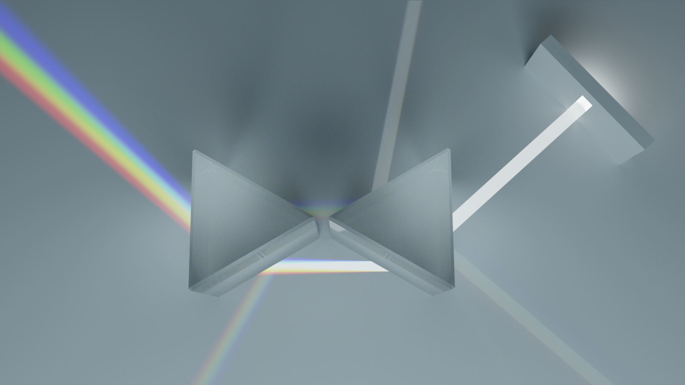
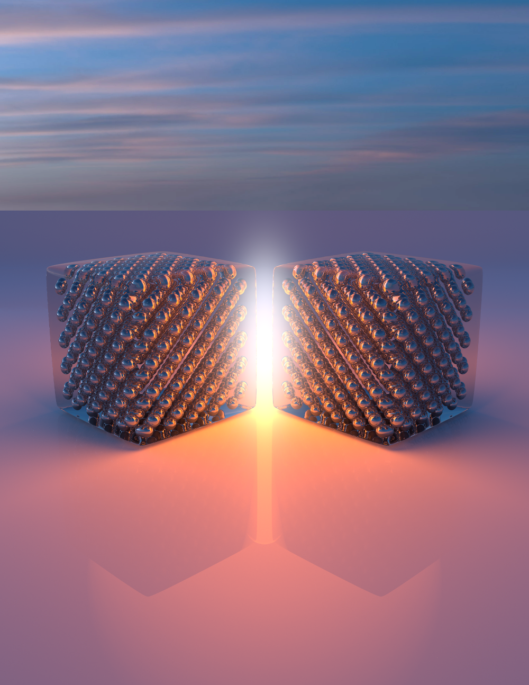
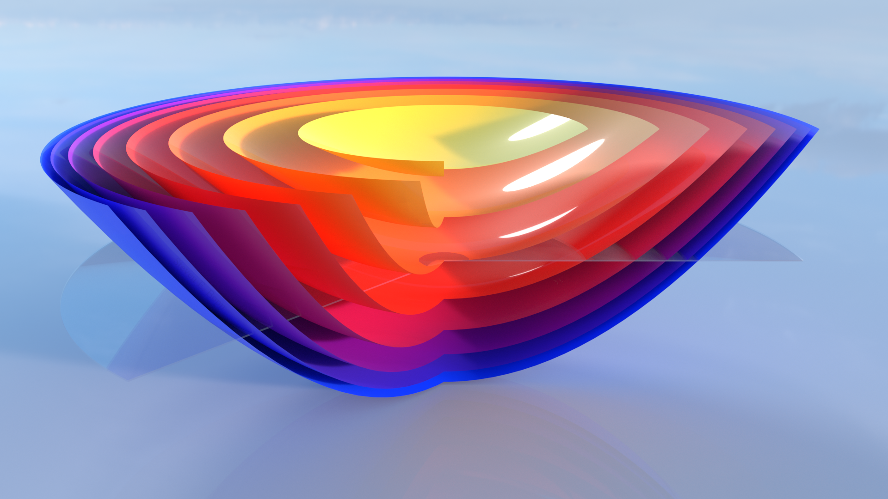
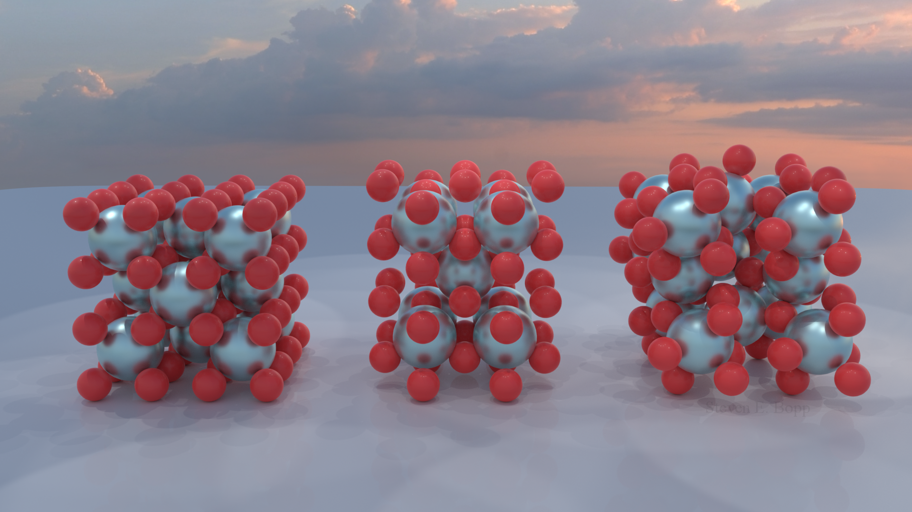
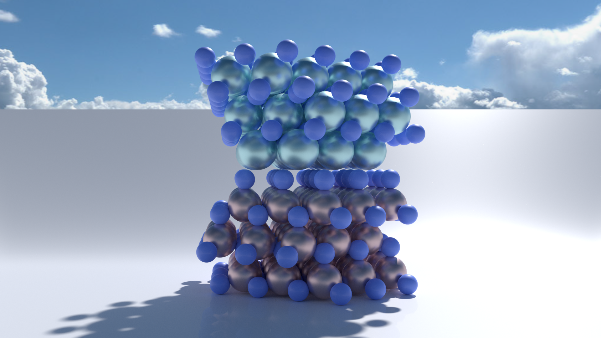
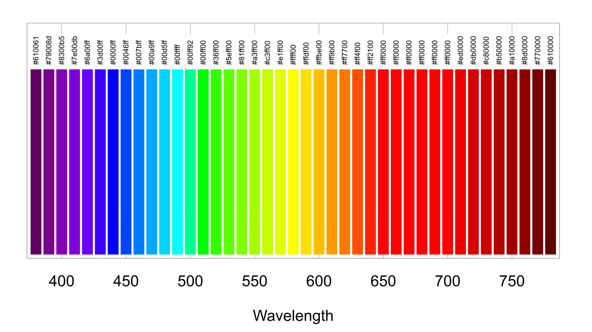

A heat map of the (110) pole figure for the Fm3m structure with the Brillouin zone of the unit cell in the center of the pole figure. Calculated with MTEX, rendered with Cycles in Blender.

Electron localization functions (front), and local ionic potentials (rear) along the (100) direction of TiN (left), and ZrN (right) calculated with Quantum Espresso (atomic radii scaled 50%)

A pair of prisms dispersing white light. Rendered with LuxCore unbiased raytracing in Blender.

Polymer encased silver nanocubes. Cover attempt, and press release for Light Sci. Appl. 8, 13 (2019)

Calculated dispersion surfaces with Fermi energy for an aluminum oxide, titanium nitride quantum well-based pulse limiter

(From left to right) The Cubic, Tetragonal, and Monoclinic phases of ZrO

Layers of (111) ZrN (top) having epitaxial registry with the c-axis of GaN (bottom)

Hex color representations of visible wavelengths in 10 nm increments (all done in GNUPlot)
